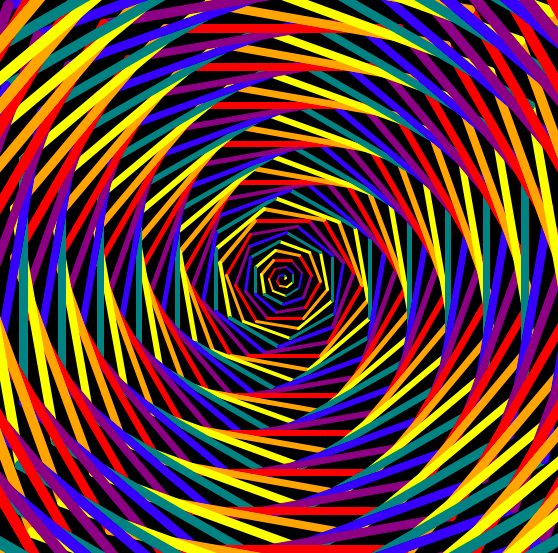
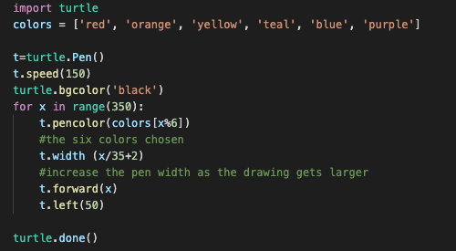
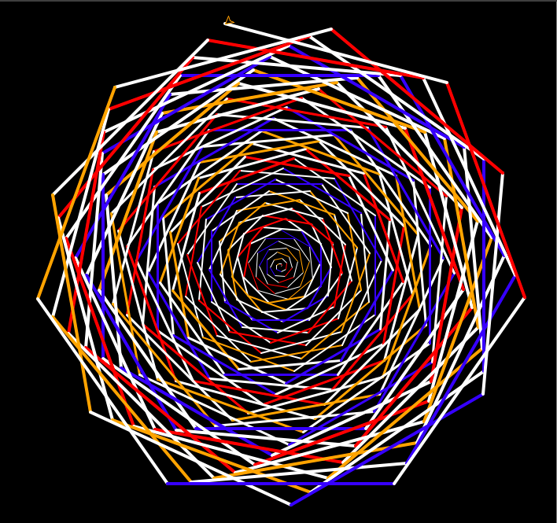
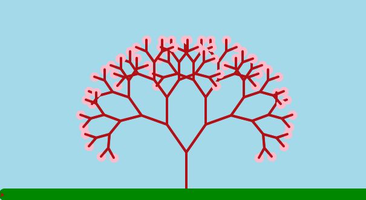
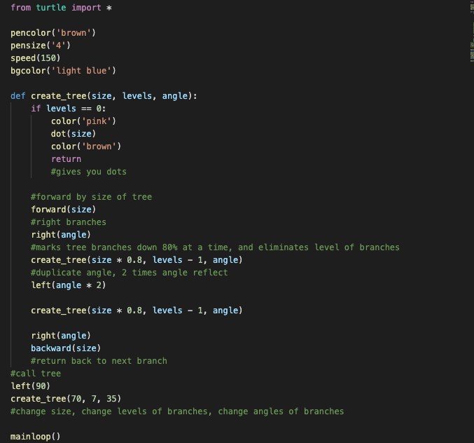

A brief display of different
types of spirographs and fractals that can be created using Turtle Draw

Sample code used to create this is:


This is a very similar code to the first one.
The more you mess around with colors, angles and returns, you get unique
patterns back every time.

The sample code used to design this:

The tree itself is moldable. You can change branches, angles, sizes, etc.
I made mine a cherry tree, and changed the background color and added grass
which isnt shown, but you can add whatever you like to the scene.